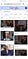

These two metrics only matter for all actual online services and products.

Yes you landed here how many money will we make before you leave us and how many time it will take you to come and land again. Are we, internet users, like birds or planes?
Are geeks and nerds converting others to birds or building a better world with art, technology, and science?
What else could be better for us?
